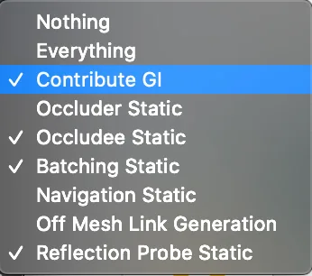
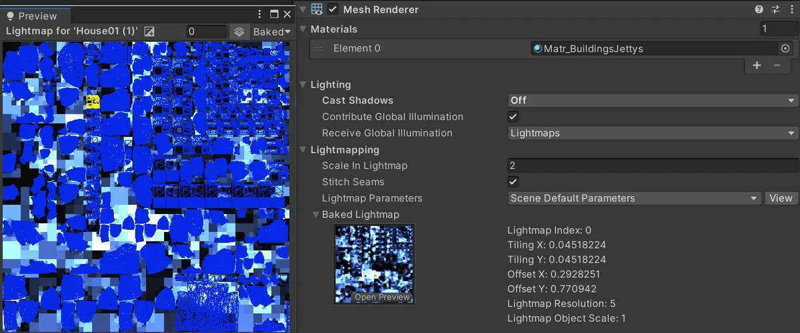
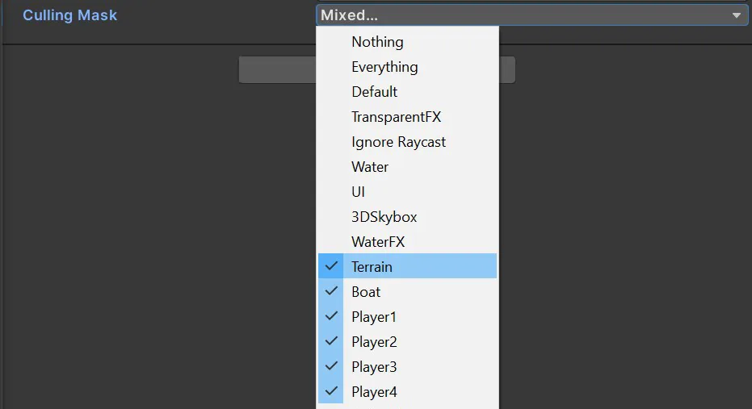
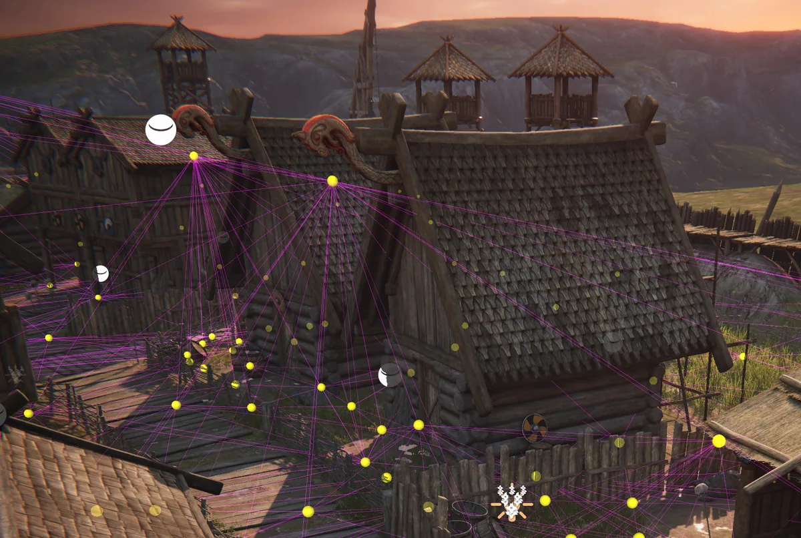
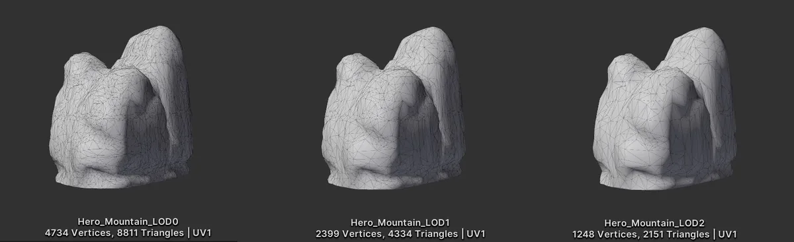
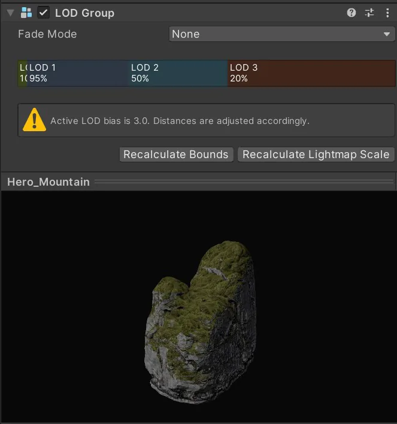
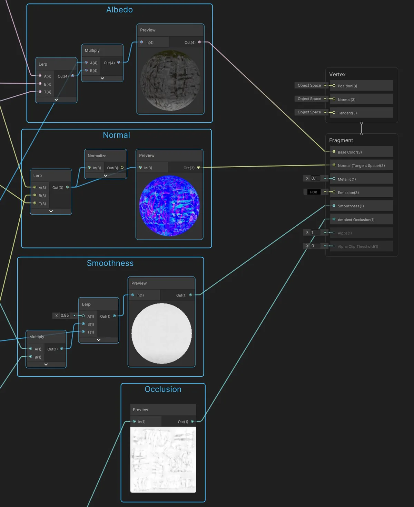
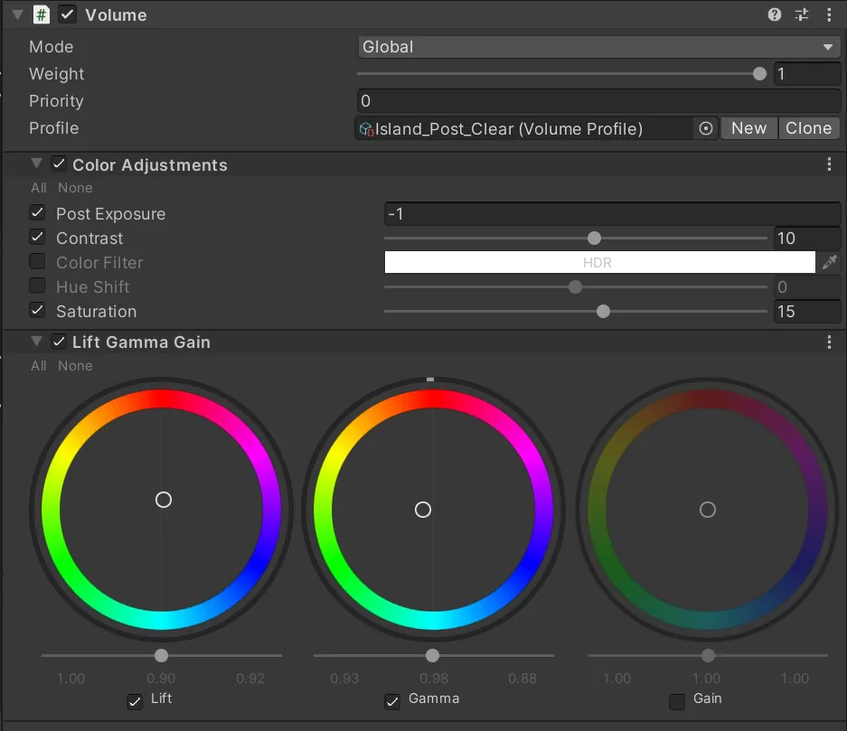
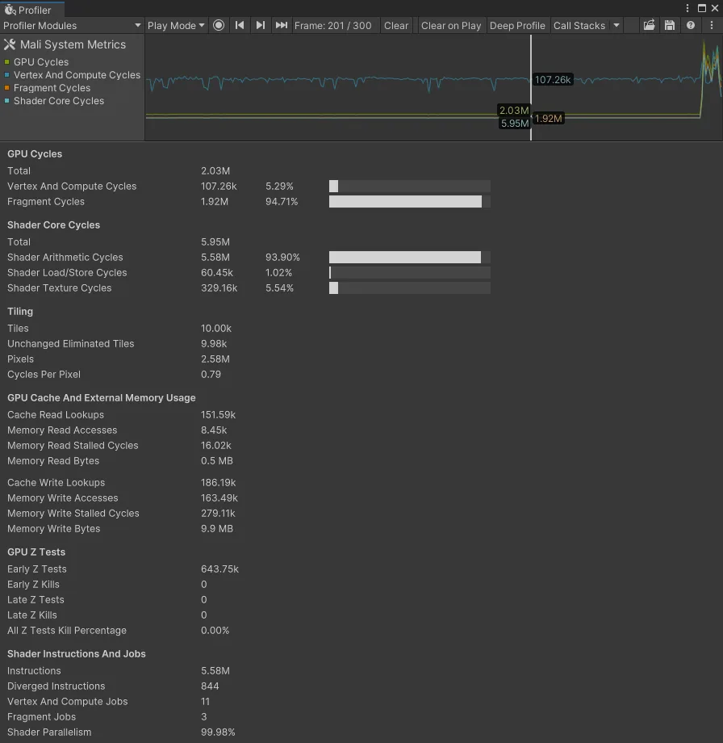

避免使用过多动态光源
在使用前向渲染（forward rendering）时，务必避免为移动应用添加过多动态光源。可以考虑改用自定义着色器效果（custom shader effects）和光照探针（Light Probes）为动态网格提供光照，并为静态网格使用烘焙光照（baked lighting）。
有关 URP 与内置渲染管线（Built-in Render Pipeline）实时光源的具体限制，请参阅这份功能对比表。
禁用阴影
阴影投射可以按 MeshRenderer 和光源分别禁用。请尽可能禁用阴影，以减少绘制调用（draw calls）。
你也可以在角色下方放置一个简单的网格或四边形，并贴上模糊纹理来伪造阴影。或者使用自定义着色器创建斑点阴影（blob shadows）。

将光照烘焙到光照贴图中
使用全局光照（Global Illumination, GI）为静态几何体添加富有戏剧性的光照。为对象标记 Contribute GI，即可将高质量光照以光照贴图（Lightmaps）的形式存储起来。
烘焙后的阴影与光照在运行时渲染不会带来性能损耗。渐进式 CPU 和 GPU 光照贴图器（Progressive CPU and GPU Lightmapper）可以加速全局光照的烘焙。
请按照手册指南以及这篇关于光照优化的文章，开始在 Unity 中使用光照贴图。
调整光照贴图设置（Lightmapping Settings，Window > Rendering > Lighting Settings）和光照贴图尺寸，以限制内存占用。
使用光照层
对于包含多个光源的复杂场景，可以用层（layers）将对象分隔开，再把每个光源的影响范围限制到特定的剔除遮罩（culling mask）上。
对移动对象使用光照探针
光照探针（Light Probes）会存储场景中空白区域的烘焙光照信息，同时提供高质量的光照（包括直接光与间接光）。它们使用球谐函数（Spherical Harmonics），与动态光源相比计算速度更快。这对于通常无法接受烘焙光照贴图的移动对象尤其有用。


光照探针同样可以应用于静态网格。在 MeshRenderer 组件中找到 Receive Global Illumination 下拉菜单，将其从 Lightmaps 切换为 Light Probes。
请继续对关卡中主要的几何体使用光照贴图，而对较小的细节使用探针。光照探针照明不需要正确的 UV，从而省去了展开网格 UV 的额外步骤。探针还能减少磁盘占用，因为它们不会生成光照贴图纹理。
有关使用光照探针选择性地照亮场景对象的信息，请参阅“Static Lighting with Light Probes”博客文章。
要了解更多 Unity 中的光照工作流程，请阅读《Making believable visuals in Unity》。
使用细节层级（LOD）
当对象逐渐远离时，细节层级（Level of Detail, LOD）可以将它们切换为使用更简单的网格、更简单的材质和着色器，以帮助提升 GPU 性能。
更多细节请参阅 Unity Learn 上的 Working with LODs 课程。


使用遮挡剔除移除隐藏对象
被其他对象挡住的物体仍可能被渲染并消耗资源。使用遮挡剔除（Occlusion Culling）将它们丢弃掉。
位于相机视野之外的视锥体剔除（frustum culling）是自动进行的，而遮挡剔除是一个烘焙过程。只需将对象标记为 Static Occluder 或 Occludee，然后通过 Window > Rendering > Occlusion Culling 进行烘焙。虽然并非每个场景都需要，但剔除在特定情况下可以提升性能，因此请务必在启用遮挡剔除之前和之后分别进行性能分析，确认它是否提升了性能。
更多信息请查看 Working with Occlusion Culling 教程。
避免使用移动设备的原生分辨率
手机和平板电脑变得越来越先进，较新的设备拥有非常高的分辨率。
使用 Screen.SetResolution(width, height, false) 降低输出分辨率，从而回收一部分性能。请针对多种分辨率进行性能分析，以找到画质与速度之间的最佳平衡。
限制相机的使用
每个启用的相机都会带来一定开销，无论它是否在做有意义的工作。只使用渲染所必需的相机组件。在较低端的移动平台上，每个相机最多可占用 1 毫秒的 CPU 时间。
保持着色器简单
通用渲染管线（Universal Render Pipeline）包含若干已经针对移动平台优化好的轻量级 Lit 和 Unlit 着色器。请尽量让着色器变体（shader variations）保持最少，因为它们会对运行时内存占用产生巨大影响。如果默认的 URP 着色器不能满足需求，可以使用 Shader Graph 自定义材质的外观。在此处了解如何用 Shader Graph 以可视化方式构建着色器。

尽量减少过度绘制与 Alpha 混合
避免绘制不必要的透明或半透明图像，也不要让几乎看不见的图像或效果相互重叠。移动平台受由此产生的过度绘制（overdraw）和 Alpha 混合（alpha blending）影响很大。你可以使用 RenderDoc 图形调试器检查过度绘制。还可以利用 Rendering Debugger，它可以将各种光照、渲染和材质属性可视化。这些可视化有助于你发现渲染问题，并优化场景与渲染配置。
限制后处理效果
泛光（glow）之类的全屏后处理效果会严重拖慢性能。请在作品的美术方向中谨慎使用它们。
小心使用 Renderer.material
在脚本中访问 Renderer.material 会复制材质，并返回对新副本的引用。这会破坏任何已经包含该材质的现有合批（batch）。如果你希望访问已合批对象的材质，请改用 Renderer.sharedMaterial。

优化 SkinnedMeshRenderer
渲染蒙皮网格（skinned meshes）的开销很大。请确保每个使用 SkinnedMeshRenderer 的对象都确实需要它。如果某个 GameObject 只是偶尔需要动画，可以使用 BakeMesh 函数将蒙皮网格冻结在一个静态姿势，并在运行时换成更简单的 MeshRenderer。
尽量少用反射探针
反射探针（Reflection Probe）可以生成逼真的反射，但在合批方面的开销可能非常高。请使用低分辨率的立方体贴图（cubemaps）、剔除遮罩和纹理压缩来提升运行时性能。
System Metrics Mali
你还可以利用 System Metrics Mali 包，在使用 ARM GPU 的设备上访问底层的系统或硬件性能指标。这包括在 Unity Profiler 中监控底层 GPU 指标、使用 Recorder API 在运行时访问底层 GPU 指标，以及通过持续集成的测试运行来自动化性能测试。
